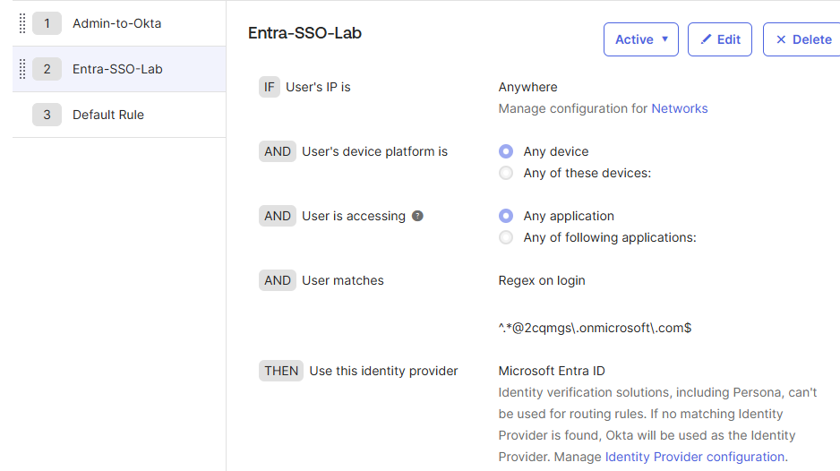
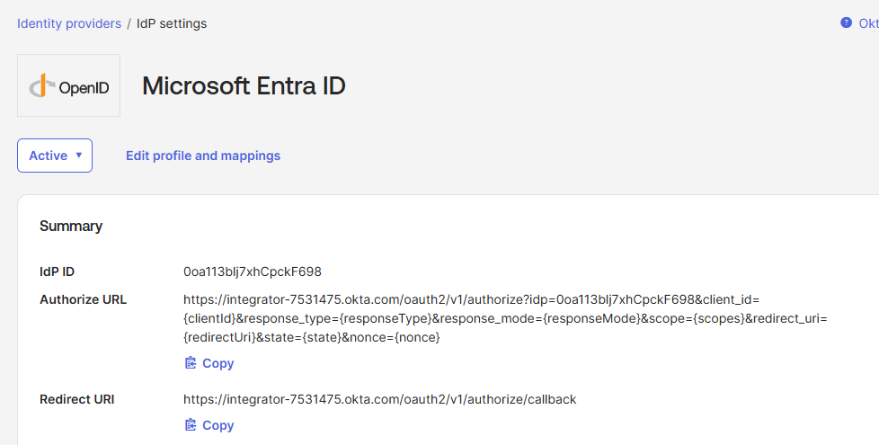
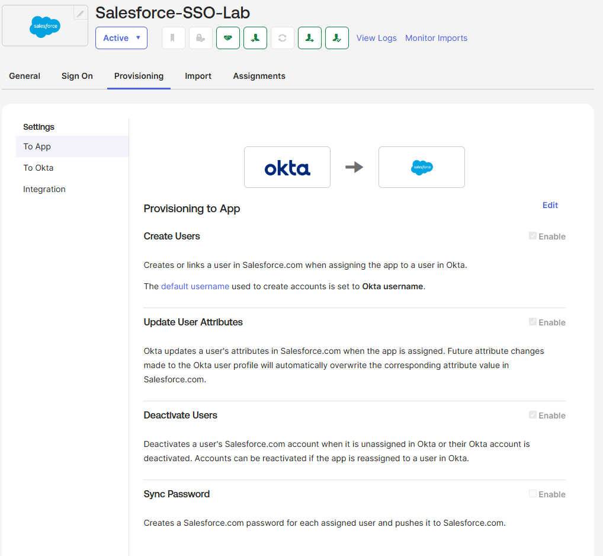
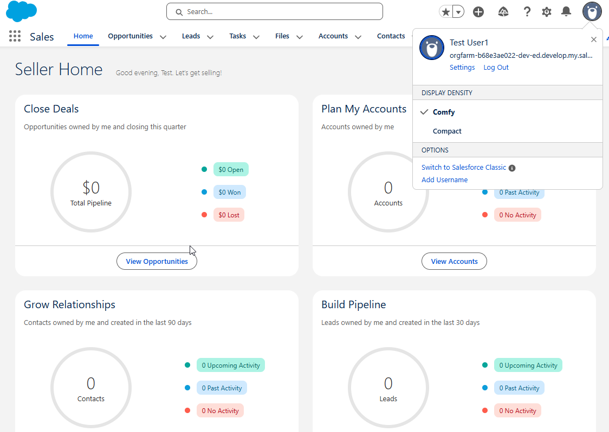
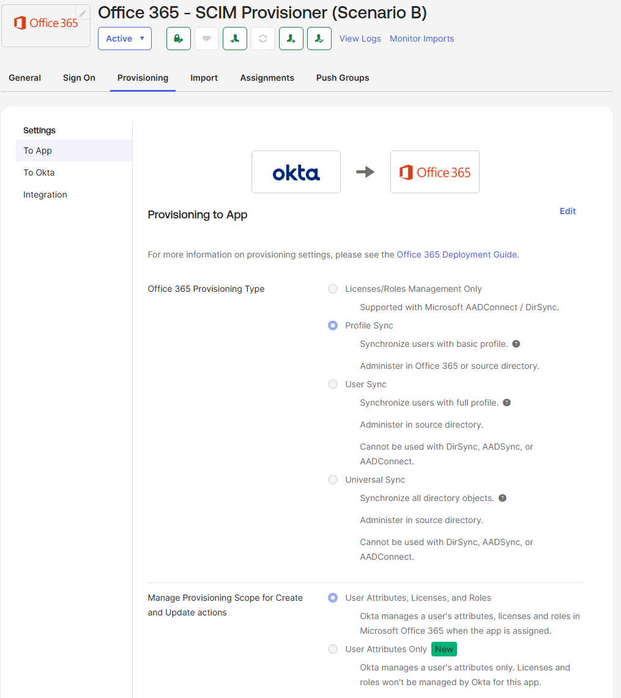
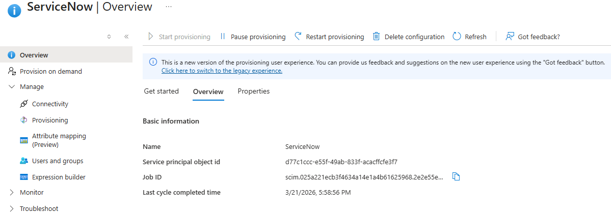
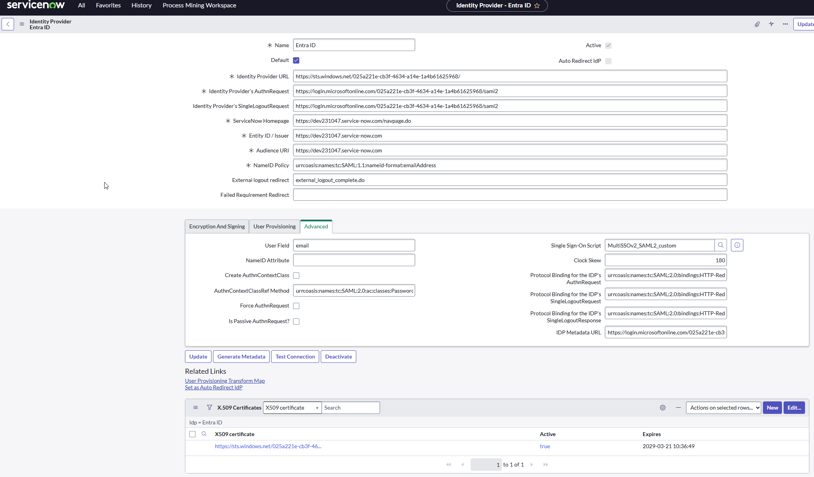
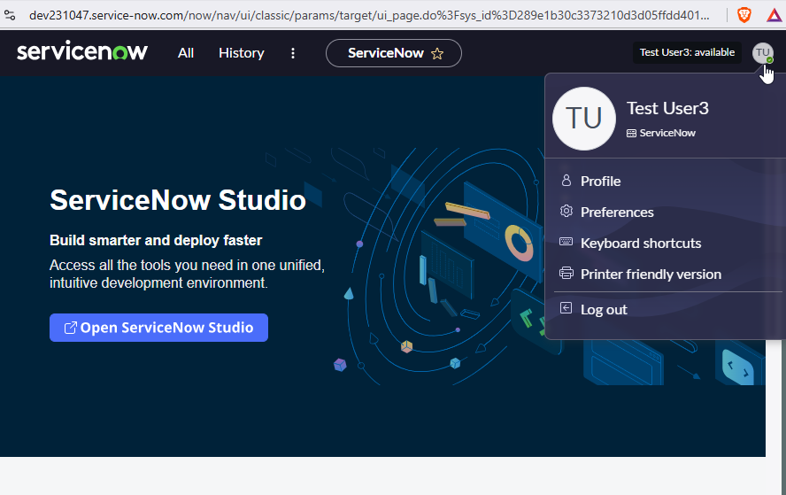

Portfolio / Identity & Access Management
Two complementary SSO architectures. Two trust models. One comparison of when each is the right choice.
Background
Enterprise identity environments rarely follow a single pattern. Some organizations run Microsoft-first, with Entra ID as the authoritative directory and Okta layered on top as a SaaS access broker. Others are Okta-first, using it as the central control plane while Microsoft exists as one of many downstream targets. Both patterns are common, both require different federation designs, and both show up in real migration, acquisition, and modernization projects.
This lab deliberately implements both. Scenario A builds the Microsoft-first architecture: Entra ID as source of truth, Okta as broker, Salesforce as the federated SP. Scenario B inverts it: Okta as the authoritative identity store, Entra ID as the identity bridge and IdP, ServiceNow as the SP. Both deliver the same end-user result, federated SSO with automated lifecycle management, through architecturally distinct chains.
Entra ID authenticates users via OIDC to Okta. Okta acts as the identity broker, handling SAML SSO and SCIM provisioning to Salesforce. Three-layer chain, Microsoft-first posture.
Okta owns the user lifecycle and provisions accounts into Entra ID via SCIM. Entra then handles SAML SSO and SCIM provisioning to ServiceNow directly. Okta is not involved in the downstream leg at all.
Scenario A
Entra ID is the authoritative identity store. Okta sits in the middle as a broker, receiving authenticated identities from Entra via OIDC and federating them downstream to Salesforce via SAML. Okta also handles SCIM provisioning to Salesforce, so the full user lifecycle flows through Okta's provisioning engine. This is the Microsoft-first pattern: Entra enforces the access gate and Conditional Access policies, Okta adds SaaS brokering capability on top.
Scenario A: Entra as IdP, Okta as broker, Salesforce as SP

Okta routing rules — admin bypass pinned to position 1, domain redirect rule below. Prevents lockout before federation is live.

Okta Identity Providers showing Microsoft Entra ID as Active with OIDC / JIT provisioning configured.

Okta → Salesforce provisioning tab showing OAuth-based SCIM configured with Create, Update, and Deactivate enabled.

Salesforce login session confirming end-to-end federated SSO through the Entra → Okta → Salesforce chain.
Scenario B
Okta is the authoritative identity store. It provisions users into Entra ID via SCIM, giving them a Microsoft account so M365 services work natively. Entra then acts as the identity bridge for downstream apps, handling SAML SSO and SCIM provisioning to ServiceNow directly. Okta is not involved in the Entra-to-ServiceNow leg at all. One deactivation in Okta cascades through Entra and into ServiceNow automatically.
Scenario B: Okta owns lifecycle, Entra is the bridge and IdP for ServiceNow

Okta provisioning logs showing a successful SCIM Create event into Entra ID, confirming the Okta-to-Entra lifecycle leg.

Entra → ServiceNow enterprise app Provisioning tab showing SCIM active with attribute mappings configured independently from Okta.

ServiceNow SSO IdP record configured with Entra as the SAML identity provider, Active toggle on and test connection passing.

ServiceNow session confirming federated SSO via the Okta → Entra → ServiceNow chain with the user profile visible.
Architecture Comparison
Both architectures deliver federated SSO and automated provisioning. The meaningful differences are in where authority lives, how many hops authentication makes, and what breaks if any one component goes down.
| Scenario A — Entra as IdP | Scenario B — Okta as IdP | |
|---|---|---|
| User record lives in | Microsoft Entra ID | Okta Universal Directory |
| Auth chain | 3 hops: Entra → Okta → Salesforce | 2 hops: Entra → ServiceNow (Okta not in auth path) |
| Provisioning chain | Okta SCIM → Salesforce | Okta SCIM → Entra, then Entra SCIM → ServiceNow |
| Okta's role | Broker: handles auth AND provisioning to SP | Source: owns lifecycle, not involved in auth to SP |
| M365 access | Native (Entra is already the IdP) | Via Entra accounts provisioned by Okta via SCIM |
| Protocols used | OIDC (Entra to Okta), SAML + SCIM (Okta to Salesforce) | SCIM (Okta to Entra), SAML + SCIM (Entra to ServiceNow) |
| If Okta goes down | Auth and provisioning to Salesforce both break | Provisioning to Entra pauses; SSO to ServiceNow still works |
| Conditional Access | Enforced at Entra before Okta sees the user | Enforced at Entra before ServiceNow sees the user |
Business Context
The right architecture is not a universal answer. It depends on where the organization's identity record already lives, what tooling is in place, and how the IT team wants to own the provisioning surface going forward.
The key distinction: Scenario A makes Entra the authority and Okta a capability layer on top of it. Scenario B inverts that, making Okta the control plane and Entra a provisioning target that also acts as an IdP. Both are legitimate production patterns. The question is which direction the organization's identity posture is already pointing.
Engineering Details
Several non-obvious configuration details surfaced across both scenarios that are worth documenting for future implementations:
In Scenario A, Okta requires both fields to JIT-provision a new user. Entra omits them from the ID token unless explicitly added as optional claims on the App Registration. The resulting JIT failure produces a non-obvious error that requires tracing through Okta system logs to identify the missing claim as the cause.
In Scenario A, before activating the Okta routing rule that redirects a domain to Entra, a bypass rule for the admin UPN must sit at position 1. Okta evaluates rules top-down and stops at the first match. Without a bypass, the admin account can get caught by the federation rule, which may produce a lockout if the IdP connection has issues during testing.
In Scenario B, ServiceNow matches the NameID in the SAML assertion to the userName field set during SCIM provisioning. If those two values come from different source attributes in Entra, the account exists but SSO silently fails with a user-not-found result. Mapping both from userPrincipalName in Entra ensures they stay aligned for the lifetime of the account, including after email address changes.
ServiceNow PDIs have the SCIM plugin installed but not always active. Entra provisioning will fail silently or return auth errors if the plugin is only in Installed state. Additionally, the glide.authenticate.multisso.test.connection.mandatory system property must be set to false to allow the SSO IdP record to be activated without a passing test connection.
Takeaways
Most federation implementations show one direction. Showing both, with a clear explanation of when each is the right choice, reflects the kind of thinking that comes from working in real environments with competing constraints rather than following a single guide.
Ability to position Entra or Okta as the authoritative IdP depending on the org's existing posture, without being locked into one vendor's preferred architecture.
Managing how identity attributes flow and transform across OIDC tokens, SCIM schemas, and SAML assertions across four different platforms simultaneously.
SSO is one piece. Provisioning and deprovisioning are where real lifecycle management happens. Both scenarios cover the full chain including cascading deactivation.
Troubleshooting failures that span multiple platforms requires knowing which system owns what and how to trace an authentication or provisioning event end to end without obvious error messages.
My Role